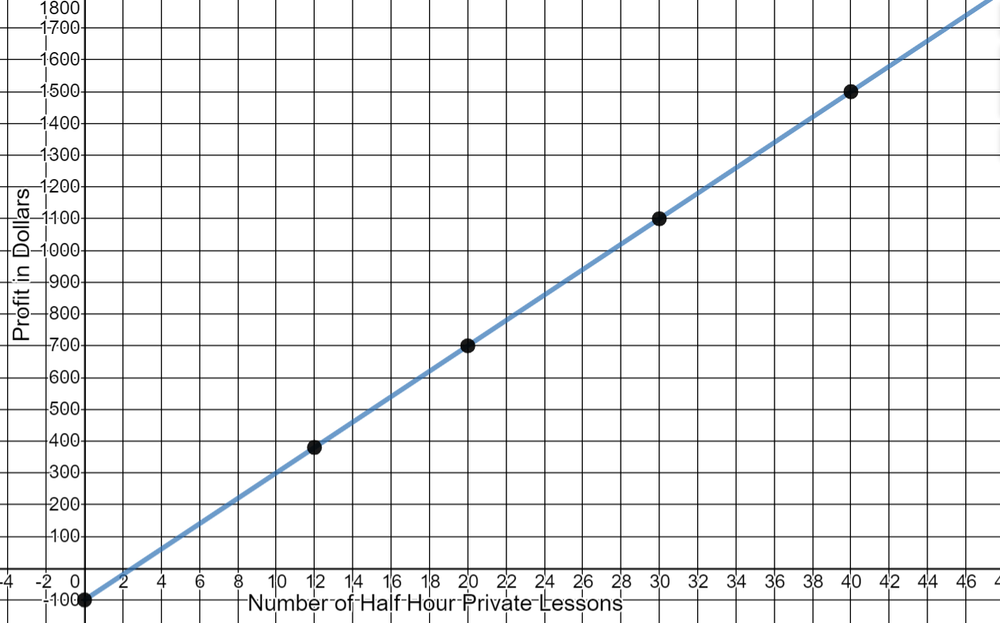
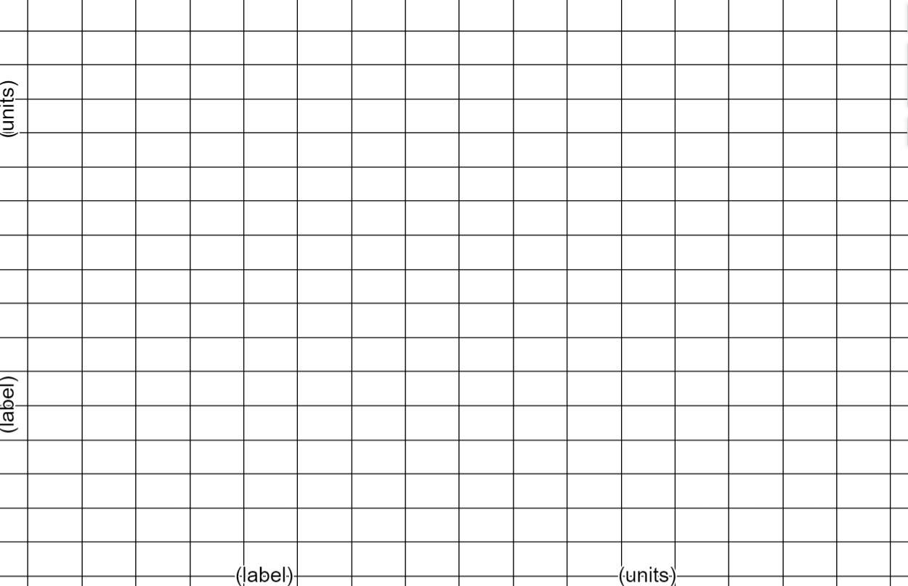
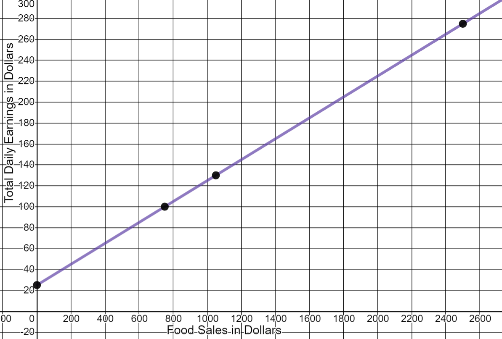
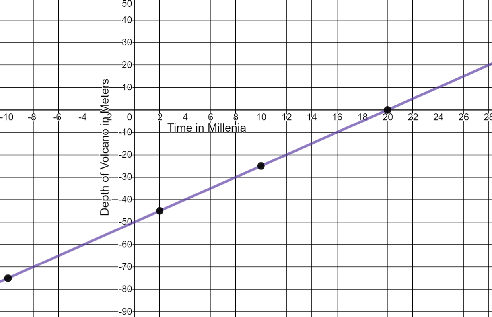
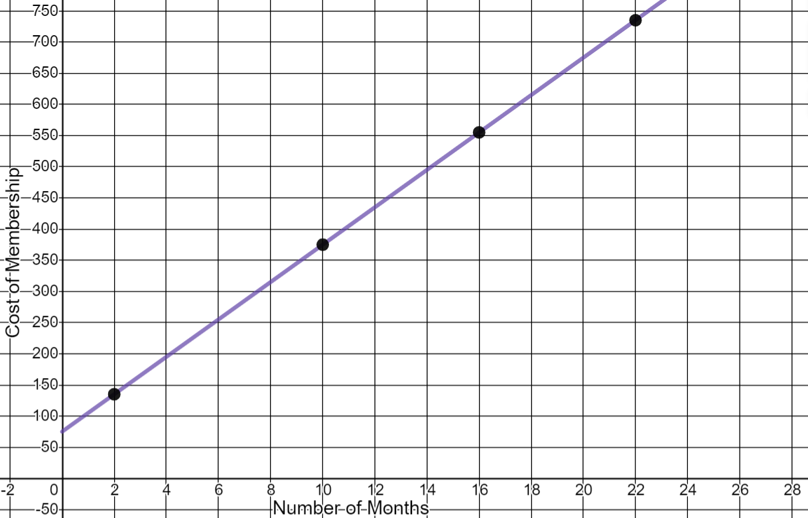

Linear Modeling and Logic Unit
4.5 Graphing Lines
- A violin instructor in New York charges a set fee for a thirty-minute private lesson. He must pay $100 per week to rent a space at a local music store to meet with his students. The graph shows the violin instructor’s profit as a function of the number of half hour lessons he has in a week. Use the graph to answer the questions.

- What is the minimum number of lessons he would have to give in order for his profit to be more than $0?
- Estimate the number of lessons that would result in a profit of $700.
- Estimate the number of lessons for a profit of $1300.
- Estimate the number of lessons for a profit of $140.
- Estimate his profit if he gives 26 lessons in the week.
- Estimate his profit if he gives 40 lessons in the week.
- How much money would the violin instructor earn if he didn’t give any lessons in the week (y-intercept)?
3 lessons
20 lessons
35 lessons
6 lessons
$950
$1500
-$100
- Ann works as a server at a restaurant that caters to large parties and groups. The restaurant policy requires that customers pay a gratuity (tip) in addition to the cost of the food. Ann’s earnings include $25 a day for her shift plus 10% of all food sales to her customers.
- What are Ann’s daily earnings if the total food sales to her customers is $2500?
- What are Ann’s earnings for the day if she goes to work but there are no customers at her tables?
- Write an equation for Ann’s total daily earnings depending on her food sales.
- What are Ann’s food sales to her customers if she earns $100 one day?
- What does Ann need to average in food sales per day to make $130 a day?
- Graph the linear model by following these steps:
- Choose the labels and units for the horizontal axis and the vertical axis.
- Choose the bounds and intervals for each axis. In other words, what are your starting and ending points for each and what will you be counting by?
- Plot the points that you found when answering the questions above.
- Use a straight edge to draw the line through the points.

$275
$25
y = 25+0.10x
$750
$1050

- The peak of an undersea volcano is currently 50 meters below the ocean surface. Due to eruptions, new rock forms on the volcano over thousands of years. The accumulating rock makes the volcano peak rise at a rate of 2.5 meters every millennium (2.5 meters every thousand years).
Complete the table to answer the following questions. Use units of meters and millennia for this problem.
Time in Millenium
Depth in meters
10
-25
-10
-75
2
-45
20
0
- What will be the depth of the volcano peak 10 millennia from now?
- What was the depth of the volcano peak 10,000 years ago?
- Write an equation for the depth of the volcano peak. (Model the depth as a negative number.)
- When will the depth of the volcano peak be -45 meters?
- When will the volcano peak reach the surface of the ocean?
- Graph the function. Label the horizontal and vertical axes and the unit of measure. Label the intervals on each axis. 
25 meters below the ocean
75 meters below the ocean
45 meters below the ocean
in 2 millenium
in 20 millenium
- To join a health club Mark must pay a $75 startup fee and a $30 fee for each month he is a member.
- Write an equation for the total cost of the membership.
- How many points are needed to draw this graph? Complete the table with your points:
- Graph the function. Label the horizontal and vertical axes and the unit of measure. Label the scale on each axis.
y = 75 + 30x
Three points make a line, but it is best to have more than three points so that the line can be drawn accurately.
Number of Months
Cost of Membership
2
$135
10
$375
16
$555
22
$735
